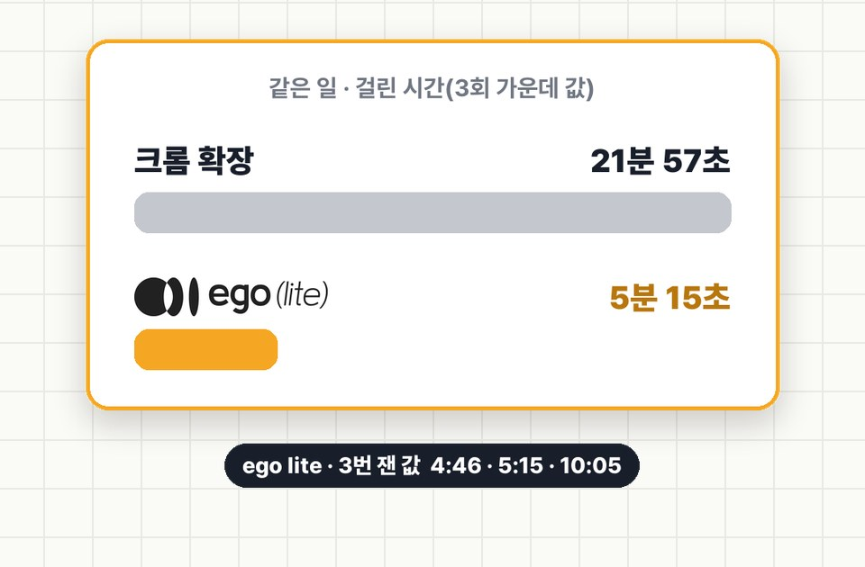

EP.34 · AI 속도
같은 AI, 같은 일인데
같은 AI, 같은 일인데
22분 vs 5분
AI한테 리뷰 모으기 시켜 놓고 20분 넘게 기다리셨다면, AI가 쓰는 인터넷 창 탓일 수 있어요. 느린 쪽은 심부름을 하나씩 하고, 빠른 쪽은 장보기 목록 들고 한 번에 다녀와요. 같은 일을 번갈아 3번씩 시켜 본 기록과 같은 요청문을 정리했어요.
01왜 차이가 날까: 심부름 방식
21분 57초크롬(Claude in Chrome 확장) · 3번의 가운데 값
5분 15초ego lite · 3번의 가운데 값
| 느린 쪽(크롬 확장) | 빠른 쪽(ego lite) | |
|---|---|---|
| 심부름으로 치면 | 우유 사 오고 집에 왔다가, 계란 사러 또 나가요 | 장보기 목록 들고 한 번에 다녀와요 |
| 실제로는 | "이거 눌러" → 결과 → "다음 이거 읽어" → 결과… 한 번에 한 동작씩 주고받아요 | "열고 · 펼치고 · 50개 읽어" 여러 동작을 묶어서 한 번에 보내요 |
| 이번에 주고받은 횟수 | 가운데 128번 | 가운데 35번 |
⚠️ 주고받은 횟수에는 크롬 확장 쪽 연결 오류로 거절돼 다시 보낸 호출도 섞여 있어요. 차이가 전부 '묶어서 보내기' 때문이라고는 말할 수 없어요.

026번 잰 기록
회차마다 새 대화(같은 Claude 모델)에 아래 03의 요청문을 그대로 줬어요. 다른 건 "어느 브라우저로" 한 줄뿐이에요. 시간은 AI가 브라우저를 처음 쓰기 직전부터 표를 저장할 때까지예요(요청 쓰는 시간 제외).
| 회차 · 창 | 걸린 시간 | 모은 리뷰 | 메모 |
|---|---|---|---|
| 1회차 · 크롬 | 21분 57초 | 150 | 호출 절반쯤이 연결 오류로 거절돼 다시 보냄 |
| 2회차 · ego lite | 5분 15초 | 150 | 막힌 곳 없음 |
| 3회차 · 크롬 | 19분 25초 | 150 | 연결 오류 재전송 · 탭이 뒤에 있어 목록이 안 그려짐 |
| 4회차 · ego lite | 4분 46초 | 150 | 막힌 곳 없음 |
| 5회차 · 크롬 | 26분 50초 | 150 | 크롬을 다시 켠 뒤에도 연결 오류 재전송(첫 시도는 0개로 멈춰서 다시 돌림) |
| 6회차 · ego lite | 10분 5초 | 150 | 막힌 곳 없음(첫 시도는 사용량 한도로 멈춰서 다시 돌림) |
- 결과가 덜 나온 쪽이 빨랐던 게 아니에요. 회차끼리 모은 리뷰 원문을 맞춰 봤더니 같은 페이지 · 같은 정렬의 리뷰였어요.
- 짝끼리 보면 차이는 4.2배 · 4.1배 · 2.7배로 회차마다 달랐어요.
03요청문과 쓰는 순서
1
ego lite
AI가 직접 쓰는 브라우저예요. 여러 동작을 묶어서 처리해요.
준비물: ego lite 설치(공식 사이트 기준 Mac용 · 비교표에 '무료' · 2026-10-31 확인), 브라우저를 쓸 수 있는 AI(이번엔 Claude Code)
- ego lite를 설치하고, 리뷰를 볼 쇼핑몰이 로그인 없이 열리는지 먼저 확인해요.
- AI에게 아래 요청문을 붙여 넣어요. 대괄호만 바꿔요.
- 끝나면 상품별로 모은 리뷰 수가 50개씩인지, 막힌 곳이 있는지 봐요.
복붙용 👇
경쟁사 리뷰 150개 → 표 한 장 · 대괄호만 바꾸기
[우리 브랜드] 마케터예요. 경쟁 상품 3개의 쇼핑몰 리뷰를 모아 표로 정리해 주세요. 상품: 1. [쇼핑몰] · [상품명]: [상품 주소] 2. [쇼핑몰] · [상품명]: [상품 주소] 3. [쇼핑몰] · [상품명]: [상품 주소] 할 일: - 상품마다 리뷰 50개씩(총 150개) 본문을 모아요. 순서는 페이지 기본 정렬 그대로. - 상품별로 장점 · 불만 · 자주 나온 말(각 3~5개, 몇 번 나왔는지 같이)을 정리한 표를 만들어요. 브라우저: ego lite로 작업해요. 규칙: - 로그인 · 가입 · 구매 · 글쓰기는 하지 않아요. 로그인이 필요하면 거기서 멈추고 적어요. - 끝나면 상품별로 모은 리뷰 수와 막힌 곳만 짧게 알려 주세요.
크롬 확장으로 비교해 보려면 브라우저 줄만 "Claude in Chrome(크롬 확장)으로 작업해요. 새 탭에서만 열고 다른 탭은 건드리지 말고, 끝나면 연 탭을 닫아요."로 바꿔요.
✅ 받는 결과: 상품별 장점 · 불만 · 자주 나온 말 표 한 장(숫자는 그 말을 한 리뷰 수).
실제로 나온 표(2회차 · ego lite · 가상 브랜드 허니 뷰티)
| 토리든(올리브영) | 웰라쥬(무신사) | 토니모리(컬리) | |
|---|---|---|---|
| 장점 | 촉촉·수분 29 · 가볍고 산뜻 17 | 촉촉·보습 26 · 흡수 빠름 20 | 촉촉함 24 · 가성비 19 |
| 불만 | 건성·겨울엔 보습 부족, 크림 필수 7 | 혼자 쓰면 부족 → 크림 필요 5 | 건조할 땐 크림 덧발라야 2 |
| 자주 나온 말 | 수분 26 · 촉촉 14 · 흡수 12 | 제형 22 · 촉촉 21 · 흡수 20 | 촉촉 20 · 수분 9 · 가성비 8 |
04맡기기 좋은 일
이번에 잰 건 1번 하나예요. 나머지는 같은 방식으로 맡길 수 있는 일이에요.
| 일 | 요청할 때 한 줄 더 |
|---|---|
| 1. 경쟁사 리뷰 모아 표로 (이번 실험) | "순서는 페이지 기본 정렬 그대로, 몇 개 모았는지 상품별로 알려 줘." |
| 2. 경쟁사 상세페이지 · 가격 · 프로모션 비교 | "가격은 정가 · 할인가 · 쿠폰 따로 적고, 확인한 시각도 같이." |
| 3. 광고 관리 화면 돌며 어제 성과 숫자 모으기 | "읽기만 하고 아무것도 바꾸지 마." |
| 4. 검색광고 키워드 등록 초안 | "저장 · 게시 버튼은 누르지 말고, 누르기 직전 화면에서 멈춰." |
05막혔을 때
크롬 확장이 계속 "탭이 그룹에 없다"며 멈춰요.
이번 실험에서도 크롬 확장 호출의 절반쯤이 이 오류로 거절됐어요. 크롬이 여러 대(예: 노트북 · 데스크톱) 연결돼 있으면 명령이 엉뚱한 컴퓨터로 갈 수 있어요. 쓰는 컴퓨터 하나만 연결하고, 그래도 안 되면 크롬을 다시 켜 보세요.
로그인이 필요하다며 멈춰요.
ego lite는 크롬과 로그인이 따로예요. 필요한 사이트는 ego lite에서 한 번 직접 로그인해 두세요. 올리브영은 로그인 없이 리뷰 100개쯤까지 보였고, 그 뒤로는 로그인이 필요했어요.
윈도우에서도 되나요?
2026-10-31 공식 사이트 기준으로 ego lite는 Mac용이었어요. 설치 전에 공식 사이트에서 지원 기기를 다시 확인해 주세요.
게시 · 저장까지 맡겨도 되나요?
게시 · 저장 · 결제는 사람이 눌러요. 요청문에 "누르기 직전에 멈춰"를 꼭 넣어요.
06출처
- 2026-10-31 제 컴퓨터 한 대에서 직접 잰 값이에요. Claude Code에서 회차마다 새 에이전트(같은 모델)에 같은 요청문을 줬어요. ego lite 0.6.1.13 · Claude in Chrome(크롬 확장). 일의 종류 · 사이트 · 시간대에 따라 달라져요.
- 리뷰는 올리브영 · 무신사 · 컬리 상품 페이지에 공개된 글이에요. 영상 속 화면은 작성자 이름을 가렸고, 소재 브랜드는 가상이에요.
- ego lite와 협찬 · 제휴 관계는 없어요. 썸네일 그림은 AI로 만들었어요.
실무에서 바로 쓰는 AI 활용법, 하나씩 올려요.
대행사에서 AI 교육하는 현직 마케터가 직접 써 보고 정리해요.
인스타에서 팔로우